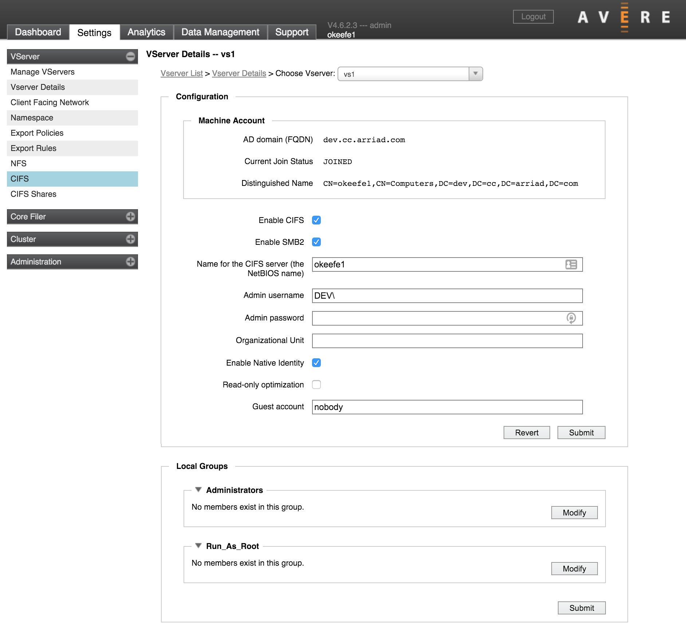

VServer > CIFS
{kind=link}
The CIFS page lets you turn on SMB access for a particular vserver. SMB (which is called CIFS in configuration settings for historical reasons) is required to allow Windows clients to access NFS-controlled storage volumes.
Note that many other systems and utilities must be configured and turned on for your vserver before you can enable SMB from this page. Read Configuring SMB Access for more complete information about configuring and enabling SMB on your system.
Enabling SMB
If your cluster has more than one vserver, choose the vserver to modify from the drop-down list in the left menu.
The Enable CIFS checkbox can be used to turn SMB access on if the required setup is in place. If you want to disable SMB, clear the checkbox.
The first time you enable SMB on a particular vserver, you must supply the information in Creating an SMB Server. After the first time, you can use the Enable CIFS checkbox to disable or enable SMB for the vserver without changing the configuration.
SMB2
Check Enable SMB2 to use SMB version 2 protocol. Avere OS supports both SMB version 1 and SMB version 2.
When SMB2 is enabled, SMB (version 1) clients use SMB, and SMB2 clients can use either SMB2 or SMB.
If you do not check this box, the vserver only uses the older SMB version 1 protocol, and SMB2 clients must use the older SMB protocol.
Creating an SMB Server
When you turn on SMB for the first time on a particular vserver, Avere OS creates a machine account for the vserver in the Active Directory domain. This machine account is also called an SMB server.
Use the following fields in the Configuration panel to define the required settings for a new SMB server.
Server Name - Enter the name that clients will see in the Name for the CIFS server (the NetBIOS name) field. The default is the name of the cluster.
The name must be between 1 and 15 characters in length and can include only the characters A-Z, a-z, 0-9, and - (hyphen).
Note
Although older Active Directory servers (before Windows 2000) can include the period character (.) in server names, Avere recommends not using this character in the NetBIOS name to avoid possible compatibility issues. (Windows NT® AD servers allow periods but not as the first character in the name.)
If you want to use the NetBIOS name to access the vserver, add a DNS server Host (A) record on your DNS server for each IP address assigned to the vserver.
Changing the NetBIOS name after it has been configured requires an AD administrator username and password.
Administrative User Name - Enter the name of an existing AD administrator account in the Admin username field.
An administrator username and password is required the first time you set up SMB on this vserver, then only if you change certain properties like the NetBIOS or OU name.
Administrative Password - Enter the password for the administrative user in the Admin password field. (Leave this blank if the AD administrator account in the previous field has no password.)
Organizational Unit (optional) - If you want to use an Active Directory OU for the vserver’s machine account, enter the name in the Organizational Unit field.
Note the format for specifying the OU in Avere OS; the OU name elements must be specified in reverse order from the distinguished name and canonical names. Example:
CN ad.example.com/ou1/ou2/TESTDN CN=Test,OU=ou2,OU=ou1,DC=ad,DC=example,DC=comAvere OS Organizational Unit setting ou2/ou1
Click Submit to save the changes and create the SMB server.
After this vserver has joined the AD domain, the Machine Account panel will show the fully qualified domain name of the AD domain, the status JOINED, and a distinguished name based on the netBIOS name specified. Also, the active directory server will include a machine account with the netBIOS name given to the vserver’s SMB server.
Additional SMB Settings
Additional SMB options can be configured on this page. These settings are not required when you first enable SMB on a vserver.
Note
To change the Native Identity or Read-Only Optimization settings, you must restart SMB. There are three steps:
- Change the setting and click Submit to save the change.
- Uncheck the Enable CIFS box, and click Submit to disable SMB for the vserver.
- Check the Enable CIFS box, and click Submit to re-enable SMB.
- Native Identity (optional) - When using ACLs, the Native Identity feature allows an SMB-enabled vserver to read the identities of users and groups as defined natively by the NAS storage system, instead of requiring a user/group mapping on the Avere cluster.
The method to use for user authentication is specified in the Directory Services configuration, which is part of the the Cluster settings section.
You also must configure Kerberos constrained delegation when using native identity with NAS core filers - read Native Identity for details.
You must restart SMB before the changed Native Identity setting takes effect.
- Read-Only Optimization (optional) - Check this box to enable performance optimization on read-only SMB shares. This optimization is only effective for vservers where all of the SMB shares are read-only.
You must restart SMB before the changed optimization setting takes effect.
- Guest User (optional) - The Guest account field specifies the username to assign to users that do not appear in the password database. This option applies only to SMB shares that allow guest access. The default value is
nobody.
Local Groups Configuration
The Local Groups setting allows administrators to create or mirror core-filer-specific access groups in the Avere cluster.
Using this feature is only sometimes necessary. If you do not need to grant special access to core filers, use Active Directory groups and leave this configuration empty.
Two types of local groups are currently supported: Administrators and Run as root.
Administrators
Windows users in the Administrators group are recognized as administrators on the core filer.
This local group allows core filer administrators to grant the same type of access that members of the AD Domain Administrators group have. For example, you can use this group to give a user administrator-level access to a particular core filer without adding that user to the AD Domain Administrators group (which affects all core filers).
In the case of filesystem recovery or domain transition operations, this group can be used to quickly grant access to a new set of administrators. The Windows SID for this group is a well-known value across all domains, but the SID for the Active Directory Domain Administrators group is different for different domains. Adding the new administrators to this local administrators group allows them to access all of the core filers in the cluster without having to update each AD ACL in each domain.
Run As Root
Run as root gives Windows users in this group root privileges on the core filer.
This option should be used if system access control lists (SACLs) must be modified, because some core filer vendors allow only members of this local group to modify SACLs. Without this setting, it is possible for a SACL modification cached in the cluster to be rejected by the core filer.
If you do not need to modify SACLs, do not use this setting.
Best Practices
In general, group solutions that use Active Directory exclusively are easier to maintain than configurations that mix AD groups and Local Groups. Changing group membership on the core filer does not automatically change the settings in the Avere cluster, so these settings must be kept in sync manually.
When Local Groups must be used, the recommended practice is to set the same group membership for the Avere vserver’s Local Groups and all of the vserver’s core filers. This practice avoids possible confusion or collisions caused by attempting to replicate individual core filer groups in one Local Groups setting.
Adding Users
Click the Modify button to add users or user groups to one of these to the Administrators or Run as root group.
Two formats can be used to specify group members:
- Windows usernames or group names, including the domain prefix (for example,
NY22\JoeB) - Security IDs (for example,
S-1-0-0)
Separate multiple entries with commas.
The Revert button discards current changes in this group and returns to the last saved setting.
Use the Submit button to save changes in both groups.